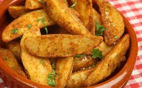

Oven-baked Spicy Potatoes

Description
This recipe is a household staple, really easy to make and super delicious. Don't go easy on the garlic!
Ingredients
- 3 large potatoes
- 3 cloves of garlic
- 1 tbsp red pepper flakes
- 1 tbsp black pepper
- 1 tea spoon oregano
- Olive oil
Steps
- Preheat oven to 220C.
- Chop garlic and put on low heat with a bunch of olive oil. Remove before it turns brown. Let it cool for 5 minutes.
- Slice potatoes into thin-ish wedges. Add them to a bowl.
- Add garlic and spices to the potatoes.
- Mix until slices are equally covered in oil and spices.
- Pour on a baking tray, line slices up so that they are not on top of each other.
- Bake for 20-25 minutes, turning the slices over once in the middle of the process.